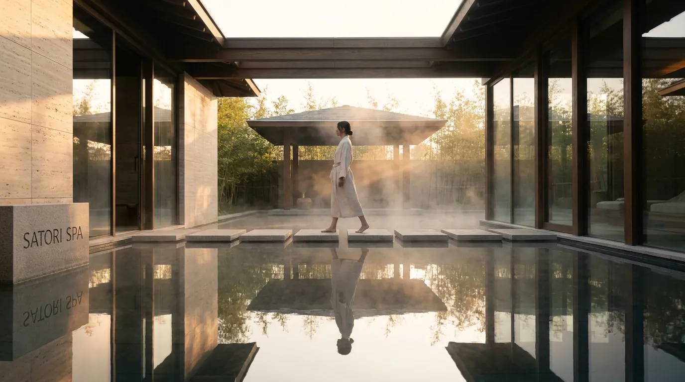
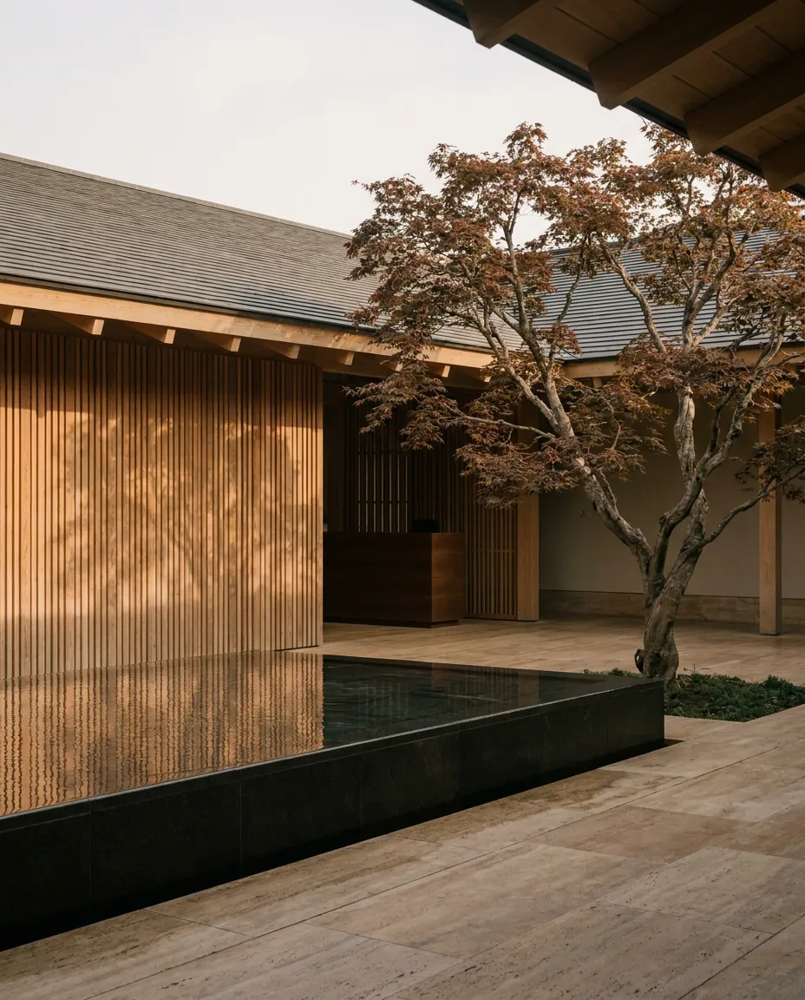
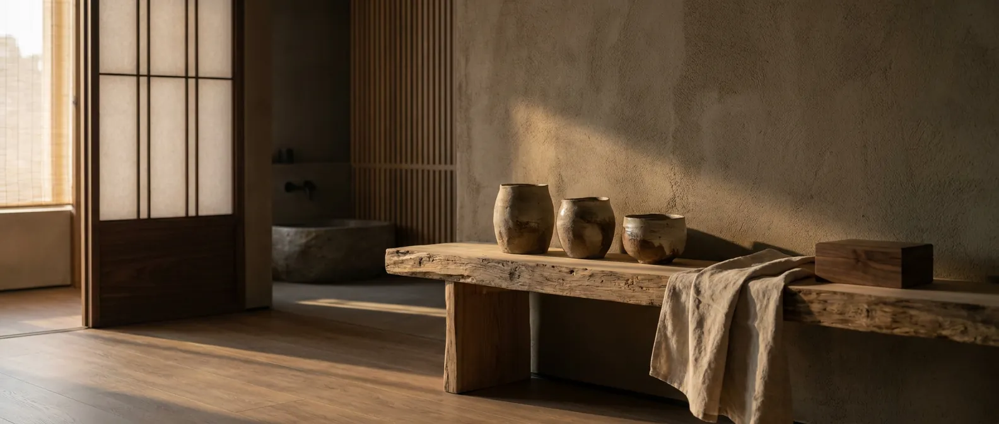
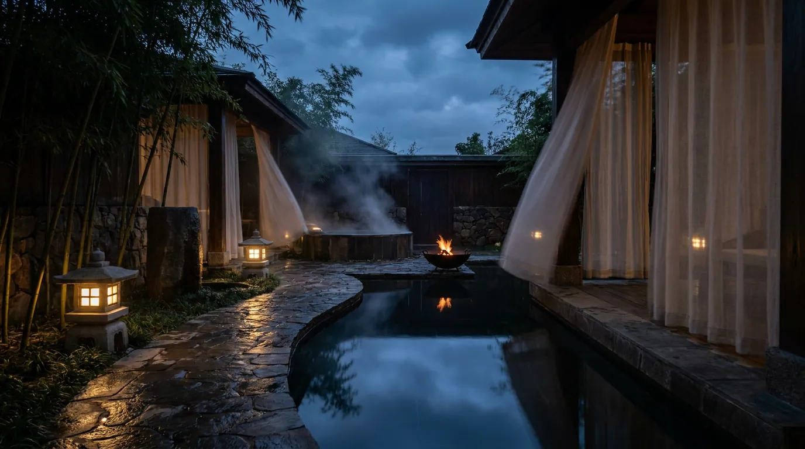

SATORI
Where silence becomes luxury.
A sanctuary shaped by water, light, ritual, and time.
Philosophy
The art of returning.
Leave the noise outside. Enter a slower rhythm shaped by water, natural light, and deliberate care.
SATORI is not a treatment destination. It is a return to presence.

Signature Rituals
Care, composed with intention.
Every gesture has a purpose. Every pause belongs.
Spaces
A sanctuary revealed slowly.
Every space is composed to change the way time feels.
The Journey
Every ritual is a passage.
Architecture & Materials
A living system of light, shadow, and water.
Nothing here is meant to look new. Stone, timber, and clay are chosen to age beautifully.
Travertine holds the day — pale at dawn, amber under lantern light.
Wet basalt turns to mirror; the floor learns from the water.

Hinoki warms to the hand. Each vessel is thrown, not molded — and shadow gives every room its privacy.
Reflections from SATORI.
[ names, locations, and portraits are fictional placeholders ]

Reservation
Return to presence.